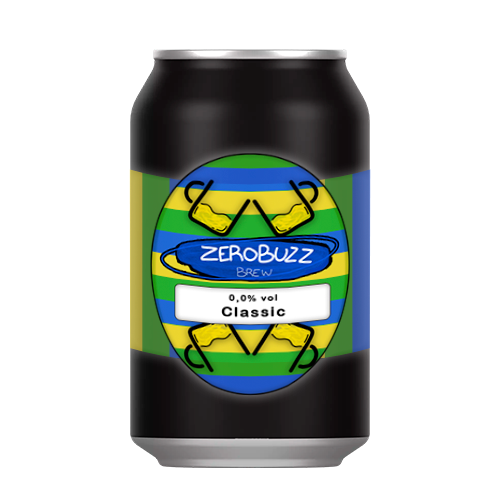
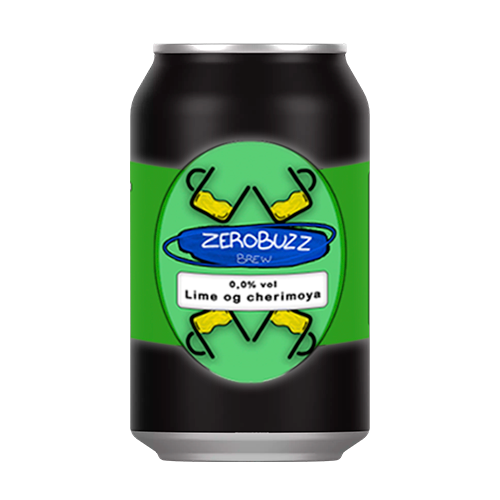

Anmeldelser
★ ★ ★ ★ ☆
Skriv en anmeldelse
Upload: 27/03/2024
★ ★ ★ ★ ★

Den bedste alkoholfrie øl
En rigtig god øl til en virkelig god pris! Jeg har længe ledt efter en alkoholfri øl, der smager præcis som dem med alkohol, men uden held. Jeg var derfor meget skeptisk da jeg først prøvede dette produkt, men må indrømme at de har ramt smagen til perfektion. Vil klart anbefale den til andre, som ligesom mig, elsker øl smagen men ikke vil drikke dem med alkohol.
Upload: 10/03/2024
★ ★ ★ ★ ☆
Smager præcis som rigtig øl, mangler dog et større udvalg
Et helt fint produkt som jeg klart vil anbefale videre. Smagen er rigtig god, og man kan slet ikke smage forskel på de rigtige og denne. Jeg ville dog ønske lidt flere klassiske valgmuligheder, men er selvfølgelig med på at de tager tid at udvikle, så jeg vil helt klart holde mig opdateret på siden fremover.
Upload: 25/02/2024
★ ★ ★ ★ ★

Super godt produkt!
Godt produkt. Jeg har altid været mest til specialøl, hvilket har været et problem efter jeg er begyndt at skære ned på mit alkoholindtag, da det for det meste kun er de klassiske der bliver lavet. Jeg håber selvfølgelig at der komme masser flere muligheder i fremtiden, men for nu er jeg helt tilfreds med dette udvalg, da det er større end hvad de fleste andre tilbyder.
Upload: 05/01/2024
★ ★ ★ ★ ★

Kan klart anbefales
Jeg har aldrig været så glad for øl smagen, så plejer at holde mig til andre alkoholiske drikkevarer, og de gange hvor jeg har holdt mig til det alkoholfrie i stedet, er jeg endt med en sodavand eller lignende. Men da jeg hørte om dette produkt, tænkte jeg straks at det var noget jeg måtte prøve, og må helt klart sige at jeg ikke er blevet skuffet. Selvom jeg stadig drikker alkohol, er dette et super godt alternativ til de dage, hvor jeg af diverse grunde gerne vil holde mit alkoholindtag nede, men samtidig føle mig som en del af fællesskabet, da de fleste jeg kender elsker øl.
Upload: 02/01/2024
★ ★ ★ ★ ★
De smager bare godt
Nu har jeg prøvet alle øl her på siden, og må klart sige at denne med Lime og cherimoya er min yndlings. Selvom jeg sagtens kan lide øl smagen, må jeg sige at dette er endnu bedre. Selvom den smager langt fra traditionel øl, får jeg stadig en klar fornemmelse af at det er det jeg drikker, ved simpelthen ikke hvordan, men det er godt gået må jeg sige. Håber der kommer flere smage i fremtiden, for så skal de helt sikkert også prøves.